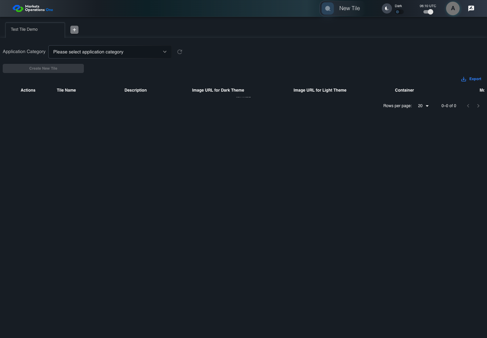

UI-MFE-010 open the internal Tile module
PASS · application/run-050/ui-mfe-010-open-the-internal-tile-module-ecdaa7be5ec0-attempt-1 · ACTUAL_APPLICATION_LOCAL_SERVICES
Actual current React shell and internal admin modules. Controlled login, validation, activity renewal, UI-USER-01 entity roles, and empty administration endpoint responses. Controlled tenant component is used only for the disabled-default risk case. No BFF permission or business tenant acceptance.
2026-10-22T06:09:59.734Z to 2026-10-22T06:10:02.381Z
Assertions and result · Artifact manifest · Exact run inputs and source hashes
Result SHA-256:e93232e70db91edb34cb9b8492286230b93fcc448f4bf5ba7e046ddb3b252eddMachine observations
- source-resolved-admin-target.json
4e26c6e78086fc238ed593fac2e2194b76e6283809e55e499f041f66637d8f3e
Screenshot capture: CAPTURED. Named frames: 6.
Step screenshot bindings: COMPLETE. 5/5 canonical steps have execution screenshots.
Bindings measure structural coverage only. They do not establish screenshot content quality or relevance.
Screenshot content review: NOT_REVIEWED. Recorded context: 0/6 frames. Identical image bytes: 0 repeated frames. Recorded context does not establish human visual review.
Canonical step timeline
Given User A is authenticated as fixture UI-USER-01 with the case-specific permissions
Execution: PASSED.
1. step-01 Visible state after step 1: Given User A is authenticated as fixture UI-USER-01 with the case-specific permissions
2026-10-22T06:10:00.895Z · 1440×1000
Step: /Users/lushevol/code/github/ratan-release-impact/workbench/tasks/ui-test-coverage-20261022/test-cases.md:7180
SHA-256:cbae80fd2866edae96e1dd63a09397ba5762ab8a471e802cbb366337c399a488And an enabled admin tile uses @fm/base and module /tile
Execution: PASSED.
2. step-02 Visible state after step 2: And an enabled admin tile uses @fm/base and module /tile
2026-10-22T06:10:01.058Z · 1440×1000
Step: /Users/lushevol/code/github/ratan-release-impact/workbench/tasks/ui-test-coverage-20261022/test-cases.md:7181
SHA-256:b00f8c5abd8d4c6d5956cf9fd34c563142b07aa20c3c72c6255d57aa08f347c0When User A clicks section with source identity "UNVERIFIED admin tile title and subtitle" inside the fixture category inside the drawer titled "Tile Options"
Execution: PASSED.
3. step-03 Visible state after step 3: When User A clicks section with source identity "UNVERIFIED admin tile title and subtitle" inside the fixture category inside the drawer titled "Tile Options"
2026-10-22T06:10:01.168Z · 1440×1000
Step: /Users/lushevol/code/github/ratan-release-impact/workbench/tasks/ui-test-coverage-20261022/test-cases.md:7182
SHA-256:e8117c068f191602708d07414e1971245405952c4d657458447c4bb12e16a798Then button named "Create New Tile" inside the selected administration tabpanel is visible
Execution: PASSED.4. step-04 Visible state after step 4: Then button named "Create New Tile" inside the selected administration tabpanel is visible
2026-10-22T06:10:01.741Z · 1440×1000
Step: /Users/lushevol/code/github/ratan-release-impact/workbench/tasks/ui-test-coverage-20261022/test-cases.md:7183
SHA-256:4b86a2ab852b3c94fe03d93e11ac5647a67ea712faaa6fcdee4b454959271646And combobox named "Application Category" inside the Tile administration tabpanel is visible
Execution: PASSED.5. step-05 Visible state after step 5: And combobox named "Application Category" inside the Tile administration tabpanel is visible
2026-10-22T06:10:01.840Z · 1440×1000
Step: /Users/lushevol/code/github/ratan-release-impact/workbench/tasks/ui-test-coverage-20261022/test-cases.md:7184
SHA-256:1b8533b3a33f2da0cf22048eb65c63fc88ede4fd056720211c9aa7efb57fa42e
Additional named frames

The final visible state after the named test assertions.
2026-10-22T06:10:01.983Z · 1440×1000Step: Test source: /Users/lushevol/code/github/ratan-release-impact/workbench/e2e/audit-specs/module-risk-expanded.spec.ts:13
SHA-256:
d66637196f368a9e193d30f6b84b2bb8f22d343c313ed02efde03e60ddfabf29Screenshots establish visible state only. Assertions and traces support functional claims.